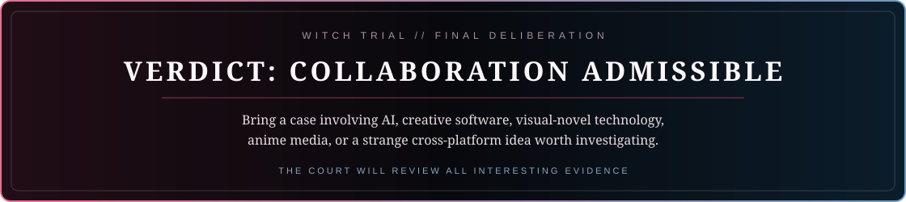

Start with a signal
The best first message is concrete: a problem, a prototype, an odd constraint, or a question that has stayed interesting longer than expected.
Elsewhere
No witch needs to be found here. Only work worth sharing, questions worth pursuing, and a good reason to build together.

The best first message is concrete: a problem, a prototype, an odd constraint, or a question that has stayed interesting longer than expected.
Unofficial fan-made theme. No affiliation with the rights holders. Magical Girl Witch Trials and its characters belong to their respective rights holders. © 2024 Re,AER LLC. / Acacia.